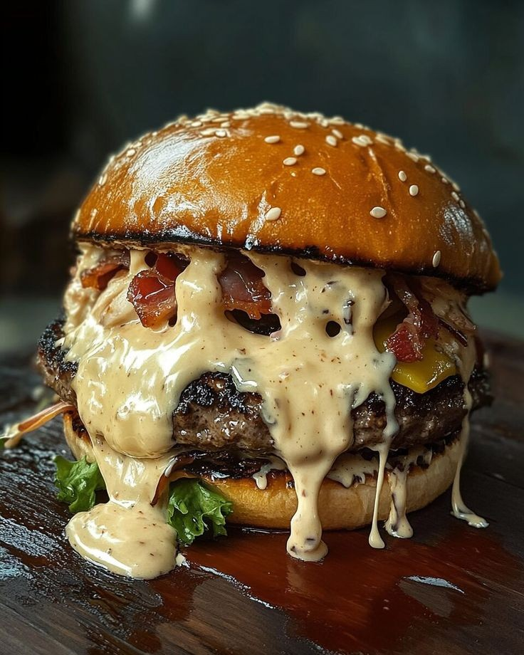

Beef Burger

Category: Snacks
Ingredients:
- 500g ground beef
- 1 small onion, finely chopped
- 1 egg
- 2 tbsp breadcrumbs
- 1 tsp garlic powder
- Salt and pepper to taste
- 4 burger buns
- Cheese slices (optional)
- Lettuce, tomato, onion rings
- Ketchup, mustard, or mayo
- Butter for toasting buns
Instructions:
- In a bowl, mix ground beef, onion, egg, breadcrumbs, garlic powder, salt, and pepper.
- Shape into 4 equal-sized patties.
- Heat a pan or grill and cook patties on both sides until browned and cooked through.
- Toast buns lightly with a bit of butter on a pan.
- Assemble the burger: bottom bun, lettuce, beef patty, cheese, tomato, onion rings, sauces, and top bun.
- Serve warm with fries or a side salad!
← Back to Home